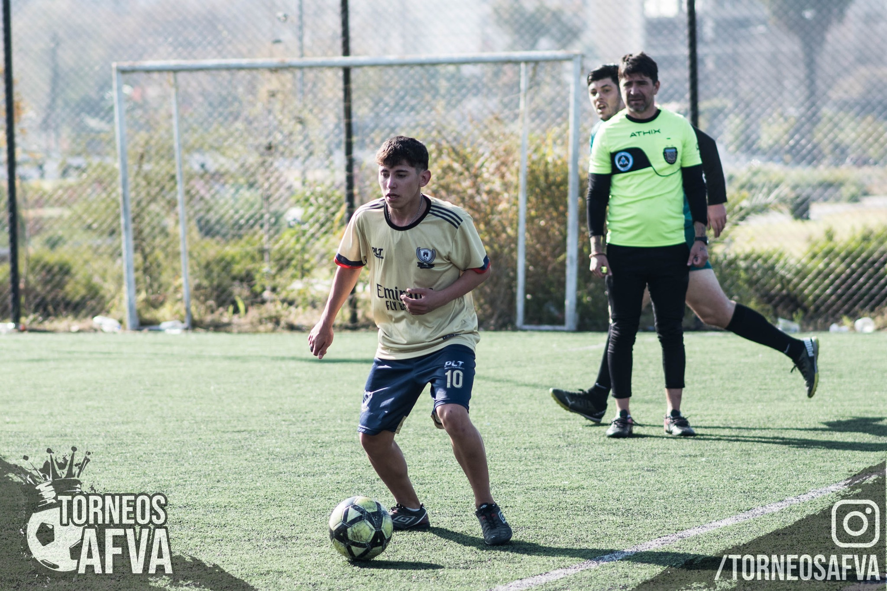
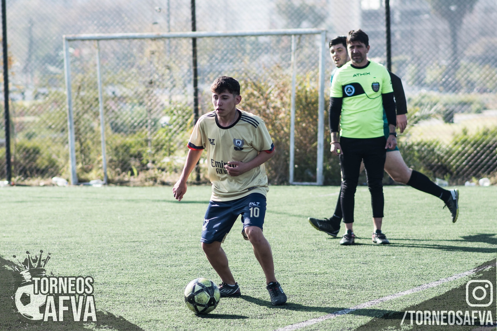

Es el primer torneo amateur de fútbol 9 donde se va a desempeñar el equipo, dejando todas sus fuerzas en conseguir la tan ansiada copa.
El mismo se disputa en Lanús, en la provincia de Buenos Aires, a escasos metros de la cancha oficial del Club Atlético Lanús.
El lugar no solo cuenta con dos grandes canchas de fútbol, sino que también tiene espacios al aire libre para poder compartir una mañana/tarde entre amigos y fútbol, posee con unos grandes vestuarios armados para los jugadores, y con una parrillas para que, todos los que lo deseen, puedan quedarse a disfrutar del predio.
 
